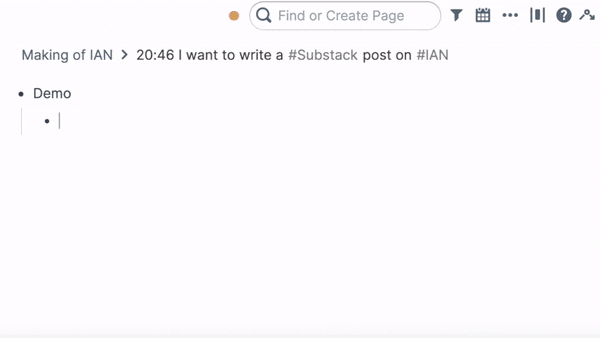
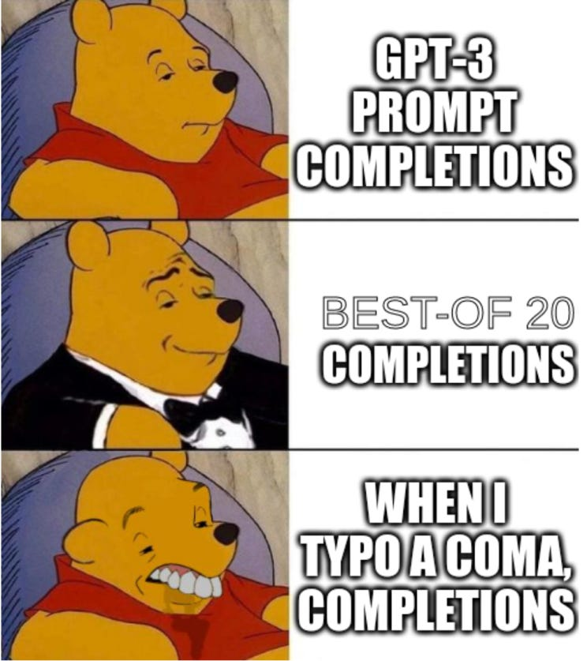
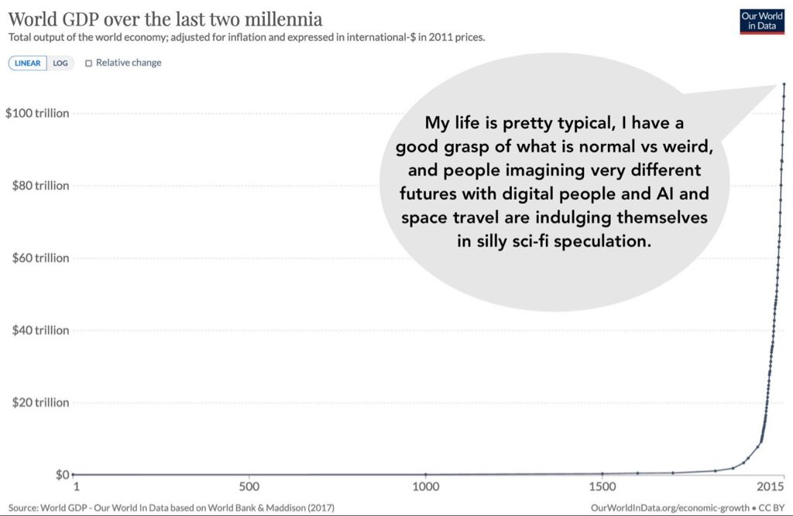
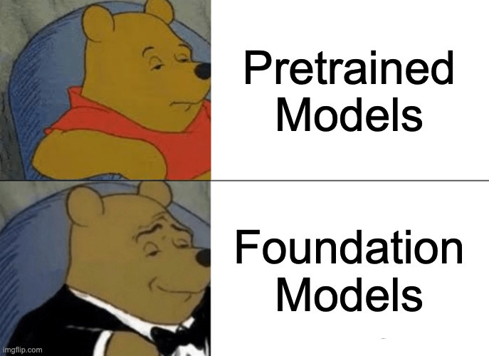

minimalpriora spinoff |
Updated | ||
|---|---|---|---|
| Author | Jan Kirchner | ||
“ Show, don’t tell. ” - probably said originally by someone with bad hearing
Holden Karnofsky asks you to imagine yourself as a digital person - a copy of yourself that runs on a computer and that has the potential to vastly increase both productivity and output. An easily deployable digital person has the thrilling potential to not only reduce the effort a task requires (like other productivity tools might), but additionally to scale up and dramatically raise the ceiling of your output.
As Balaji S. Srinivasan points out, the biggest bottleneck in productivity might be the human in the loop:
We really should be in the middle of a golden age of productivity. Within living memory, computers did not exist. Photocopiers did not exist. Backspace did not exist. You had to type it all by hand. […] For example, maybe we have it wrong with productivity apps. Maybe the goal isn’t writing up a Google Doc so another human can understand it, but hitting enter on GitHub so a computer can do it.
Instead of assigning each other tasks in one big circle of shifted responsibility, we might want to factor out subtasks and automate them away aggressively.
I used a two-week vacation to take these thoughts to heart by fine-tuning a large language model on the text I have produced in the last decade and by integrating its capabilities into my daily workflow. This post summarises some of the things I’ve learned in the process.
Turning large language models into productivity tools is in vogue. OpenAI Codex promises to reduce coding to the exciting part, decomposing the problem, and remove the laborious part, turning the decomposed problem into code. Emacs packages to seamlessly apply well-engineered contextual prompts to arbitrary text are under development. And out of a slurry of quirky GPT applications, Ought’s Elicit stands out to me for its vision and its obvious potential to accelerate science. Even the idea of fine-tuning a language model with personal text is not new - Tom Riddle did it long ago.
However, none of the existing solutions enable exactly what I imagined. They are either in a closed beta stage or gimmicky and narrow, require a murder and the splitting of my soul, or generally do not fit naturally in my usual workflows. Opening a webpage to talk to Richard Feynman is fun, but not faster than just reading the Wikipedia article. In addition, while Richard Feynman is famously great at explaining difficult concepts, I will still have to translate his explanation into my own reference frame. Arguably, the person who is best suited to extend my thoughts is - me.
Enter #IAN ( intelligence artificielle neuronale ), a hacky (and obviously narrow) version of a digital person based on my writing pattern. I collected text across different platforms (Email, WhatsApp, Telegram, Facebook, Roam Research, ~50Mb in total) and used the Google TPU Research Cloud to fine-tune GPT-J, a language model recently released by the rockstars at EleutherAI. I then wrote a small plugin for Roam Research and a custom keyboard for Android that allow me to integrate #IAN into my daily workflow.[2] It was a marvelous experience and the result is surprisingly useful - even though it of course falls way short of a full “digital person”.
[2]
I’ll publish another post with all the boring technical details and code snippets in case someone wants to try the same.
Let me first show you what the result looks like. I have three main modes of interaction with the model.
curl in the command line. For a stylish retro aesthetic, sampling given a prompt works directly from the command line.[3]
[3]
The nice folks at EleutherAI already provide a minimal python flask server that can process POST queries.
While the thought process of #IAN here is not 100% clean (it suggests a name and then immediately states it’s searching for a name), this example nicely demonstrates that the fine-tuning clearly had some effect. I have indeed been thinking a lot about effective altruism recently and this exact suggestion would be highly unlikely from a model only trained on random text from the internet.
SmartBlock in Roam Research. Since this project is already weird enough, I will not commence this section with a love letter to Roam Research[4]. I will only state that I’ve been using this note-taking app quite extensively and integrating a language model that can automatically expand my thoughts has been the primary motivation for this project. Because, while Roam Research is useful as is, some workflows are rather painful. In particular, sometimes I want to retrieve notes where I don’t remember any of the relevant keywords nor the context in which I stored the note. While this can also be resolved by a good system of tags and querying, I thought it would just be a lot cooler to give some more interactivity to my second brain.[5]
[4]
That will be another post.
[5]
Note the words generated in italics - those would be bidirectional tags in Roam which I change to italics to avoid my Roam graph from becoming cluttered.
In this example, #IAN is producing a lot of - somewhat disjoint - thoughts on polarisation, with references to Scott Alexander, Nate Silver, and Tyler Cowen’s “mood affiliation”. A lot like how my notes would usually look before editing. Some of these are potentially fruitful, mood affiliation can certainly contribute to polarization, even though I have never (i.e. don’t remember having) made that connection before.
A custom keyboard for Android. While the Roam plugin probably has the biggest potential to be useful in the long run, I also wanted an easy way of interacting with #IAN while on the road. So I dove into the exciting world of app development and hacked together a custom keyboard that allows querying #IAN in any text box.[6]
[6]
This required installing the gcloud suite on Termux which is a bit (very) whacky but works for now. The prompt templates in the keyboard are taken from this GitHub repo.
This is mostly a party trick because the text is annoying to enter on the smartphone keyboard and the results are not easy to process further. But this mode of interaction makes it tempting to perform a type of Turing test with my friends over WhatsApp - if I end up doing that, it’ll be another post.
Now as you’ve seen in the demo videos, result quality can vary quite drastically. As has been pointed out before, a language model pre-trained on the internet will end up producing text that looks like random text from the internet, which is often not exceedingly useful. Fine-tuning might alleviate this to some degree, but to improve model output there are additional strategies that have been proposed:
Repeated sampling/Cherrypicking
Most impressive demos of GPT-3 where it displays impressive knowledge of the world are cherrypicked, but what that tells us is that the model needs to improve by approx log(N)/L bits, where N and L are the number of cherrypickings necessary and the length of the generations in consideration, respectively, to reach that level of quality. In other words, cherrypicking provides a window into how good future models could be. Leo Gao
IAN provides different samples every time it is queried. Getting useful output from the model often requires providing the same prompt several times. Here is an example (prompt in italics) with suggestions for dinner tomorrow:
IAN says: Tomorrow for dinner I will cook one of the following dishes: 1. pasta 2. meat with vegetables 3. vegetarian pasta 4. vegan pasta
IAN says: Tomorrow for dinner I will cook one of the following dishes: 1. pasta with pesto __ 2. spaghetti bolognese 3. arancini with giallo 4. hamburgers with ketchup 5. chicken fried rice 6. fish fillet with olive 7. salad or fruit 8. fried zucchini flowers with mint 9. vegan cookies 10. double chocolate cake 11. tiramisu
IAN says: Tomorrow for dinner I will cook one of the following dishes: 1. pasta 2. salad 3. vegan burger 4. fruit salad 5. dessert Dishes can be combined to make a meal, but please don’t put more than one on the card.
discovered on EleutherAI
Prompt engineering
_ Sampling Can Prove The Presence Of Knowledge But Not The Absence
GPT-3 may “fail” if a prompt is poorly-written, does not include enough examples, or bad sampling settings are used. […] The question is not whether a given prompt works, but whether any prompt works. _Gwern Branwen
Large language models have hidden knowledge that is only revealed when the query is phrased in the right way. Asking #IAN a question usually doesn’t work[7] - it gets “distracted” and changes the topic or continues with a volley of more questions.
[7]
Asking politely never works and is guaranteed to get you made fun of for trying.
IAN says: What is the capital of Spain? What is the length of the human foot? What are common uses of the words “dog,” “cat,” “horse,” “sheep,” “cow,” “goat,” “fish”?” What is a deductive process? What is a market economy? What is a human being?
The list goes on for a while and eventually ends with the same question: What is a word?
Half-finished sentences work better (kind of, I had to sample twice, the first response was “Seville”)
IAN says: The capital of Spain is Madrid. The main airport is Adolfo da Costa. The train from Madrid to Barcelona usually takes around 2 1/2 hours. The direct train from Barcelona to Frankfurt is not recommended because it stops in Lleida, which is not so exciting. If you would like to go to another city during your travels in Spain, just let me know.
Listicles work great - probably because they provide multiple results per prompt (see the previous section)!
IAN says: Here is a list of ideas for my next tattoo: 1. a fish on a spaceship 2. a stalker on a hunt 3. the double helix 4. the second law of thermodynamics 5. flames in the shape of a heart 6. a bird in flight 7. a birds nest with babies 8. a map of Europe with a “place” for every country 9. a woman with a machine gun 10. a bird eating a snake 11. two dragons eating each other 12. a star with a sunroof and a lightning bolt 13. a small person inside a big person 14. an astronaut with an instrument for measuring radiation 15. a skull eating a heart 16. three interlocking hearts
Embrace it. While the previous two points have been made before, this next point I haven’t encountered before. There are two ways to reduce the difference between model output and ground truth - either change the model or change the ground truth. I believe the second option has been under-explored. To get good performance, I might just change what I consider “good output”.
While I obviously say this tongue in cheek, I think there is a case to be made here. Something like the uncanny valley effect[8] or Larry Tesler’s Theorem[9] might unjustly bias us to dismiss model output that is useful. Therefore, the “trick” for better performance is just to embrace the weirdness and the otherworldly quirkiness.
[8]
Anything that is close to but not quite human can elicit an adverse emotional response.
[9]
“AI is whatever hasn’t been done yet.”
On decisions that have objectively good and bad outcomes, like personal finance, I don’t feel ready to follow #IANs advice, which is a bit too Keynesian for me:
IAN says: Here is a plan for how I will invest my money for the next 10 years:
More in general : I want to increase my spending on research, travel and learning.
More on academia : I want to support more PhDs and PostDocs. In particular, I want to support the establishment of a Frankfurt-wide sustainability network (see details of how I envision this below).
More on sustainability in general : I want to increase my support for organisations working on improving the world.
More on EA : I want to increase my participation in and support for EA.
Those are all certainly worthy causes, but as a starving PhD student™ I was more hoping for ETF recommendations.
But for decisions where the outcome is purely subjective and where owning it is part of succeeding, it’s awesome to hand over some agency. In particular, #IAN is great at producing creative ideas for tattoos, songs, lyrics, and motives for painting.
_IAN says: My deepest darkest secret is
_I would hate to see you hurt
And the thought of you growing old
And being used up
Is like a punch to the gut
_IAN says: These are the lyrics of a beautiful love song, written by a highly advanced AI. It’s lyrical elegance and astonishing vocabulary amazes experts of classical and contemporary poetry. The lyrics go like this: ‘_
My dearest friend,
I am writing to tell you that I have just received an offer I cannot refuse. A very charming man from the Andromeda Galaxy has asked me out for dinner. He is half an inch tall, has black fur and green scales, and is very wise. I am afraid I am going to have to say no.’
IAN says: Here is a list of things I want to draw: 1. A tree on fire 2. A wormhole 3. A space station 4. A list of things that are kind of neat 5. The first law of metaphysics 6. The general equilibrium effect 7. isomorphic and equivalently 8. A use of Kurt Gödel’s incompleteness theorem
So I will attempt to counter the Larry Tesler bias and cut the model some slack. Instead of trying to poke holes into an idea, I will let myself be guided by (cherrypicked) suggestions from #IAN sometimes. Why can’t I get a tattoo just because an AI told me to?[10] Why can’t I draw a “use of Kurt Gödel’s incompleteness theorem”? I can’t help but think of this plot that has been popping up on Twitter a lot recently:
[10]
#IAN says: I want to get a new tattoo! This time it will be a snake on my shoulder, and I thought about asking you first. Do you have an idea what I could do? I’m thinking about snakes, I guess. Best, Jan

Adapting to the trend might require radical changes. Better start early.
I have a few things I’d love to try once I have a continuous stretch of free time to improve #IAN. Top of my list is to find a smarter way of extracting text from Roam Research. Currently, the graph structure is lost completely in preprocessing. There must be something clever[11] that can be done short of changing the architecture.
[11]
Perhaps just adding some indication of the indentation level can already help? Or splitting the file, not after a fixed number of lines but after all the children of a block are processed?
It is also just a question of time until larger pre-trained (i.e. foundational[12]) models become available. Larger models exhibit more “general reasoning capabilities”, which would expand the domain in which #IAN output is useable. It would likely also come with higher hardware requirements, to the point where fine-tuning is not feasible even with TRC access. On the other hand, compute gets cheaper every year, so perhaps it will become feasible eventually.
[12]

One thing that I’d be curious to test is some version of Iterated Distillation and Amplification[13] to boost performance. I imagine a routine as follows:
This could potentially be automated by training a classifier that learns my preferences for which of the multiple samples to keep. However, I don’t have great intuition about how sensible the output will be, given that we’re talking about a miniature dataset here (~50Mb). But perhaps automation is not even necessary and a slow circle (amplifying for a month and then distilling) might already produce useful results. Note that I’m not trying to build artificial general intelligence here. I’m just trying to build something useful[14].
[14]
That can help me research how to align AGI.
Connected to this last point, there are some points on AI safety and ethics that I want to make. When I told friends about this project, I got two types of responses: either moderate enthusiasm and encouragement or resigned despair ( “Oh no, I already hate this” ). Since I try to take feedback that I get serious[15], I’ll share my thought process here on why this is not a terrible idea.
[15]
As some people have pointed out to me later, the arguments that I am providing in this section are not at all soothing and only tangentially related to the reasons for why they originally said “Oh no”. To this, I can only say “Oh well”.
I don’t run any danger of creating something dangerous myself. I don’t have the required access to compute and I am not an ML researcher. Taking the outside view (no matter what my latent god complex tries to convince me of) worrying about this particular danger appears like an inefficient use of limited cognitive resources.
There is however also the possibility that posts like this one represent an infohazard. Perhaps pointing out that something like #IAN is possible leads to someone with more resources (compute and cognitive) to work on something that has an actual shot at AGI. This is still unlikely, but perhaps not as easily dismissed. Remember the Yudkowsky-Moore Law of Mad Science: “Every 18 months, the minimum IQ necessary to destroy the world drops by one point.” The fact that someone with my background is writing about this topic is actually a datapoint that neatly follows the trend suggested by this law.
But I am by far not the first one with an idea like this. The few people within the community that I’ve talked to said that this is pretty much one of the first ideas that everyone working on language models has. So if there is an infohazard in this post, then it’s just in carrying this idea into broader circles. And to hedge against the danger of that, I’m spending some more weirdness points to advertise AI Safety to my peers. In particular, my plan for this Substack is to come back to this theme repeatedly.
One last ethical consideration I would like to touch on is whether it is acceptable for me to include information about all my interactions with other people in the fine-tuning of the model. My primary intuition pump here is that if it’s fine to write notes about these interactions in an analog notepad, then it should also be fine to compute a statistical representation of these notes in a language model - as long as I am only using the resulting model as I would use a notepad (i.e. an external extension to my mental scratchpad). Setting up a chatbot where people can just ask any question to #IAN on f.e. Telegram and receive an automatic response would cross this line for me. Or really any interaction with #IAN that is not monitored/filtered by me. That would just feel icky.
Although I want to point out that #IAN has not “spilled any beans” so far. It is often generating statements about real people doing things they might really be doing but has never (up to this point) actually recounted an event that actually happened. But this is just a restatement of ” the fine-tuning didn’t overfit too hard ” and viewed through that lens it is also likely that there is some overfitting and that a careful forensic data analyst might separate truth from plausible construct. Therefore, I’ll rather be safe than sorry and not make the fine-tuned weights available. Also this horrifying short story about the fate of the first uploaded mind - no, thank you.
What to take away from this project? The most striking part for me is to interact with a statistical summary of my collected output. I notice certain invariants and lots of variabilities - a bit like a word cloud on steroids[16]. It made me reflect a lot on identity and style. At the same time, reading text generated in the style of you is a lot of fun, and teasing meaning from #IAN is at times like reading tea leaves - any possible meaning is not in the object but in the interaction.
[16]
Credit for this phrase goes fully to Dylan.
It’s interesting to see a substantial part of my lifetime output condensed to 50Mb. One consoling thought is that, as Gwern puts it, the last bits are the deepest[17], and perhaps getting a great language model of a person doesn’t actually require a lot of data - just extremely high quality. I’ll keep that in mind the next time I text someone about their lunch plans. Finally, figuring out how to “talk” to #IAN and to tease out the most useful responses is a pretty remarkable experience. Probably the closest you can currently get to talking to an alien mind. Can recommend.
[17]
_“For everyday actions, anybody, of any intelligence, can get enough practice & feedback to do them quite well. Where individuals differ is when they start running into novel choices, rare choices, choices that take seconds but unfold over a lifetime, choices where we will never get any feedback (like after our death).” _My (fuzzy, handwavy) point here is that pretraining can get you very close to the first part. Once you are there, what distinguishes individuals might actually be a rather small set of preferences that plays out in complicated ways.
A big thank you to the following people for proofreading & feedback: Jasper, Nadia, Max, Hiba, Dylan, Deyue and Zhuoshi.
They are just the same thing, right?
I realize that this runs counter the typical idea of scaling, where the last bit requires the most training data.
[1]
All the section titles after this one were generated by #IAN and then lightly cherrypicked by me. The prompt is Here is a list of possible titles for the sections of my first Substack post on the creation of a large language model fine-tuned to my own speech patterns. This list has been curated by a very smart AI. 1.